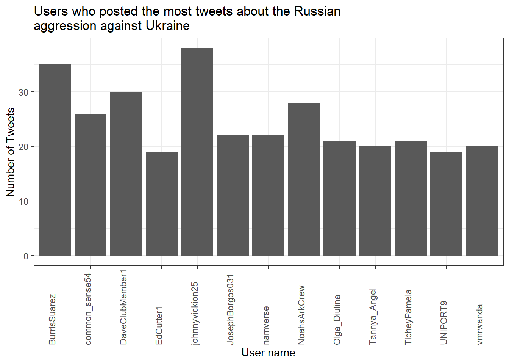

8 Tidy text analysis
After working through Tutorial 7, you’ll…
- understand the concept of tidy text
- know how to combine tidy text management approaches with regular expressions
- be able to produce first analyses, e.g., word frequencies
8.1 What is tidy text?
Since you’ve already learnt what tidy data is (see Tidy data), you can make an educated guess about the meaning of “tidy text”! In contrast to the ways text is commonly stored in existing text analysis approaches (e.g., as strings or document-term matrices), the tidy text format is a table with one single token per row (token = the unit of analysis). A token is a meaningful unit of text, i.e., a word, a sentence, or a paragraph that we are interested in using for further analysis. Splitting text into tokens is what we call the process of tokenization.
Julia Silge and David Robinson’s tidytext
package
makes tokenizing into the tidy text format simple! Moreover, the
tidytext package builds upon tidyverse and ggplot2, which makes it
easy to use for you, since you already know these packages (see
Tutorial: Data management with tidyverse and Tutorial: Data
visualization with ggplot for a recap). That’s why we’ll focus on the
tidytext in this session.
This tutorial is based on Julia Silge and David Robinson’s open-access book “Text Mining in R. A Tidy Approach” and a lot of the following code was actually written by Julia Silge. If you want to dig deeper into tidy text analysis, you should check the book out. Both authors have also created an informative flowchart of the tidy text analysis workflow:
| Image: Tidy Text Analysis Workflow |
 |
Before we start, install and load the tidytext package and the
tidyverse package.
# installing/loading the package:
if(!require(tidytext)) {
install.packages("tidytext");
require(tidytext)
} #load / install+load tidytext
# installing/loading tidyverse:
if(!require(tidyverse)) {
install.packages("tidyverse");
require(tidyverse)
} #load / install+load tidyverse8.2 Preprocessing real-world data
Let’s investigate what the tidytext package is capable of and apply it
to some real-world data. I’ve provided you with a data file that
contains data collected with the Twitter API about the Russian
aggression against Ukraine on Moodle.
Let’s import the data into RStudio and inspect it using the View()
function.
data <- read.csv("ukraine_tweets.csv", encoding = "UTF-8") # Use UTF-8 encoding to keep the smileys
View(data)The date column is a character variable. Let’s convert the date column to a standard format using the lubridate package of the tidyverse, making it easier to create graphs using time data later on.
data <- data %>%
mutate(time = lubridate::ymd_hms(time)) %>% # turn the data column into a proper format with the lubridate package (this helps to create time series graphs!)
tibble()
View(data)This data set contains a lot of information! We get to know who wrote the tweet (user and the unique user.id) and where this person lives (user.location). But most importantly, we can find the text of the tweet in the column full_text.
First of all, let’s reduce some of these columns that we don’t need for our text analysis.
data_short <- data %>%
select(time, user, full_text) # keeps time, user, and full_text
View(data_short)Now, to get an overview, let’s create a visualization of the user’s who posted at least 18 tweets.
data_short %>%
group_by(user) %>%
summarize(n = n()) %>%
filter(n > 18) %>%
ggplot(aes(x = user, y = n)) +
stat_summary(geom = "bar") +
theme_bw() +
theme(axis.text.x = element_text(angle = 90, vjust = 0.00, hjust = 0.00)) +
labs(title = "Users who posted the most tweets about the Russian\naggression against Ukraine",
x = "User name", y = "Number of Tweets")
Now that we have had our overview, we will start with a process called text normalization. Text normalization is the endeavor to minimize the variability of a text by bringing it closer to a specified “standard” by reducing the quantity of divergent data that the computer has to deal with. In plain English, this means that our goal is to reduce the amount of text to a small set of words that are especially suitable to explain similarities and differences between tweets and, more interestingly, between the accounts that have published these tweets. Overall, text normalization boosts efficiency. Some techniques of text normalization will be covered in the next few sections, for example, tokenization, stop word removal, stemming/lemmatization and pruning. You could add additional steps, e.g. spelling corrections to reduce misspellings that increase word variance, but we won’t cover all text normalization steps in this tutorial.
8.2.1 Tokenization
I think we are ready to tokenize the data with the amazing
unnest_tokens() function of the tidytext package. Tokenization is
the process of breaking text into words (and punctuation marks). Since
scientists are almost never interested in the punctuation marks and will
delete them from the data set later anyway, unnest_tokens() comes with
the nice bonus of setting all text to lowercase and deleting the
punctuation marks directly, leaving only words (and numbers) as tokens.
A common practice is to remove all tokens that contain numbers. Depending on the research question, it can also be helpful to remove URLs. For illustrative purposes, we will do both. But keep in mind that removing all URLs will take the option from you to compare what accounts have shared certain URLs more frequently than others.
remove_reg <- "&|<|>" # & = & in HTML, < = < in HTML, > = > in HTML
data_tknzd <- data_short %>%
mutate(tweet = row_number()) %>% # creates a new column that is called "tweet", which contains a unique id for each individual tweet based on its row number
filter(!str_detect(full_text, "^RT")) %>% # removes all retweets, i.e., tweets that are not unique but a reposts
mutate(text = str_remove_all(full_text, remove_reg)) %>% # remove special HTML characters (&, <, >)
unnest_tokens(word, full_text) %>%
filter(!str_detect(word, "^[:digit:]+$")) %>% # remove all words that are numbers, e.g. "2020"
filter(!str_detect(word, "^http")) %>% # remove all words that are a URL, e.g., (https://evoldyn.gitlab.io/evomics-2018/ref-sheets/R_strings.pdf)
filter(!str_detect(word, "^(\\+)+$")) %>% # remove all words that only consist of plus signs (e.g., "+++")
filter(!str_detect(word, "^(\\+)+(.)+$")) %>% # remove all words that only consist of plus signs followed by any other characters (e.g., "+++eil+++")
filter(!str_detect(word, "^(\\-)+$")) %>% # remove all words that only consist of plus signs (e.g., "---")
filter(!str_detect(word, "^(\\-)+(.)+$")) %>% # remove all words that only consist of minus signs followed by any other characters (e.g., "---eil---")
filter(!str_detect(word, "^(.)+(\\+)+$")) # remove all words that start with some kind of word followed by plus signs (e.g., "news+++")
head(data_tknzd)## # A tibble: 6 × 5
## time user tweet text word
## <dttm> <chr> <int> <chr> <chr>
## 1 2022-02-25 18:10:59 peekay14 1 @vonderleyen @EU_Commission rubbish!… vond…
## 2 2022-02-25 18:10:59 peekay14 1 @vonderleyen @EU_Commission rubbish!… eu_c…
## 3 2022-02-25 18:10:59 peekay14 1 @vonderleyen @EU_Commission rubbish!… rubb…
## 4 2022-02-25 18:10:59 peekay14 1 @vonderleyen @EU_Commission rubbish!… your
## 5 2022-02-25 18:10:59 peekay14 1 @vonderleyen @EU_Commission rubbish!… words
## 6 2022-02-25 18:10:59 peekay14 1 @vonderleyen @EU_Commission rubbish!… andNow, let’s check the total number of unique words in our tweet data:
paste("We are investigating ", dim(data_tknzd)[1], " non-unique features / words and ", length(unique(data_tknzd$word)), " unique features / words.")## [1] "We are investigating 259873 non-unique features / words and 25922 unique features / words."Remember: unnest tokens() comes with a few handy preprocessing
features, i.e., it already turns the text into a standardized format for
further analysis:
- Tweet ids from which each word originated are kept in the data frame (column: tweet).
- All punctuation has already been taken care of, i.e., dots, questions marks, etc. have been removed.
- All uppercase letters have been taken care of, i.e., words have been transformed to lowercase.4
Practice: Tokenization
Now it’s your turn. I’ve added another data set to Moodle that deals with the shitstorm about the German influencer Fynn Kliemann on Twitter. You can read more about the scandal that started on the 6th of May 2022 here if you feel that you need more information.
Load the Kliemann data into RStudio. Use the tutorial code and to set the encoding and to convert the date column to a standardized date format. After loading the Kliemann data keep only the time, user, and full_text column.
Next, try to tokenize the data.
For solutions see: Solutions for Exercise 6
8.2.2 Stop word removal
Next, we should get rid of stop words. Stop words are a group of words
that are regularly used in a language. In English, stop words such as
“the,” “is,” and “and” would qualify. Because stop words are so common,
they don’t really tell us anything about the content of a tweet and what
differentiates this tweet from other tweets. The tidytext package
comes with a pre-installed stop word data set. Let’s save that data set
to a source object called stop_word_data. This way, we can use it
later.
stop_word_data <- tidytext::stop_words
head(stop_word_data, 20) # prints the first 20 stop words to the console## # A tibble: 20 × 2
## word lexicon
## <chr> <chr>
## 1 a SMART
## 2 a's SMART
## 3 able SMART
## 4 about SMART
## 5 above SMART
## 6 according SMART
## 7 accordingly SMART
## 8 across SMART
## 9 actually SMART
## 10 after SMART
## 11 afterwards SMART
## 12 again SMART
## 13 against SMART
## 14 ain't SMART
## 15 all SMART
## 16 allow SMART
## 17 allows SMART
## 18 almost SMART
## 19 alone SMART
## 20 along SMARTNow, let’s use these stop words to remove all tokens that are stop words from our tweet data.
data_tknzd <- data_tknzd %>%
filter(!word %in% stop_word_data$word) %>% # removes all of our tokens that are stop words
filter(!word %in% str_remove_all(stop_word_data$word, "'")) # first removes all ' from the stop words (e.g., ain't -> aint) and then removes all of our tokens that resemble these stop words without punctuationPractice: Stop word removal
Now it’s your turn. The Kliemann data is in German, so you can’t use the
tidytext stop word list, which is meant for English text only. So
install and load the ‘stopwords’ package that allows you to create a
dataframe that contains German stop words by using this command:
stop_word_german <- data.frame(word = stopwords::stopwords("de"), stringsAsFactors = FALSE).
Create your German stop word list and use it to remove stop words from
your tokens.
For solutions see: Solutions for Exercise 6
8.2.3 Lemmatizing & stemming
Minimizing words to their basic form (lemmatizing) or root (stemming) is a typical strategy of reducing the number of words in a text.
Stemming: A stem is the root form of a word without any suffixes. A stemming algorithm (= stemmer) removes the suffixes and returns the stem of the word. Example1: vengeance –> vengeanc, or, if you use a very aggressive stemmer, vengeance –> veng || Example2: legions –> legion, or, if you use a very aggressive stemmer, legions –> leg (this one is problematic!) || Example3: murdered –> murder
Lemmatization: A lemma is a lexicon headword or, i.e., the dictionary-matched basic form of a word (as opposed to a stem created by eliminating or changing suffixes). Because a lemmatizing algorithm (= lemmatizer) performs dictionary matching, lemmatization is more computationally demanding than stemming. vengeance –> vengeance || Example2: legions –> legion || Example3: murdered –> murdered (this one is problematic!)
Most of the time, stemmers will make a lot of mistakes (e.g., legions –> leg) and lemmatizers will make fewer mistakes. However, lemmatizers summarize fewer words (murdered –> murdered) and therefore reduce the word count less efficiently than stemmers. Which technique of text normalization is preferred is always determined by the research question and the available data.
For the ease of teaching, we will use stemming on our tweet data. However, you could also use lemmatization with the spacyr package.
We’ll use Porter’s (1980) stemming algorthm, which is the most
extensively used stemmer for the English language. Porter made the
stemmer open-source, and you may use it with R using the SnowballC
package (Bouchet-Valat 2020).
# installing/loading SnowballC:
if(!require(SnowballC)) {
install.packages("SnowballC");
require(SnowballC)
} #load / install+load SnowballC
data_tknzd <- data_tknzd %>%
mutate(word = wordStem(word))
head(data_tknzd)## # A tibble: 6 × 5
## time user tweet text word
## <dttm> <chr> <int> <chr> <chr>
## 1 2022-02-25 18:10:59 peekay14 1 @vonderleyen @EU_Commission rubbish!… vond…
## 2 2022-02-25 18:10:59 peekay14 1 @vonderleyen @EU_Commission rubbish!… eu_c…
## 3 2022-02-25 18:10:59 peekay14 1 @vonderleyen @EU_Commission rubbish!… rubb…
## 4 2022-02-25 18:10:59 peekay14 1 @vonderleyen @EU_Commission rubbish!… word
## 5 2022-02-25 18:10:59 peekay14 1 @vonderleyen @EU_Commission rubbish!… fell…
## 6 2022-02-25 18:10:59 peekay14 1 @vonderleyen @EU_Commission rubbish!… euLet’s check how many unique words we have in our tweet data after all of our preprocessing efforts:
paste("We are investigating ", dim(data_tknzd)[1], " non-unique features / words and ", length(unique(data_tknzd$word)), " unique features / words.")## [1] "We are investigating 130045 non-unique features / words and 21188 unique features / words."Practice: Lemmatizing & stemming
Please stem the Kliemann data with the PorterStemmer. Since we are
working with German data, you’ll have to add the option
language = "german" to the wordStem() function.
For solutions see: Solutions for Exercise 6
8.2.4 Pruning
Finally, words that appear in practically every tweet (i.e., promiscuous
words) or words that that appear only once or twice in the entire data
set (i.e., rare words) are not very helpful for investigating the
“typical” word use of certain Twitter accounts. Since these words do not
contribute to capturing similarities and differences in texts, it is a
good idea to remove them. This process of (relative) pruning is
quickly achieved with the quanteda package. Since I don’t want to
teach you how to use quanteda just yet, I have developed a useful
short cut function that enables you to use relative pruning without
having to learn quanteda functions.
First, install/load the quanteda package and initialize my
prune-function by running this code:
# Install / load the quanteda package
if(!require(quanteda)) {
install.packages("quanteda");
require(quanteda)
} #load / install+load quanteda
prune <- function(data, tweet_column, word_column, text_column, user_column, minDocFreq, maxDocFreq) {
suppressWarnings(suppressMessages(library("quanteda", quietly = T)))
# Grab the variable names for later use
tweet_name <- substitute(tweet_column)
word_name <- substitute(word_column)
tweet_name_chr <- as.character(substitute(tweet_column))
word_name_chr <- as.character(substitute(word_column))
# turn the tidy data frame into a document-feature matrix:
dfm <- data %>%
select({{tweet_column}}, {{text_column}}, {{word_column}}, {{user_column}}) %>%
count({{tweet_column}}, {{word_column}}, sort = TRUE) %>%
cast_dfm({{tweet_column}}, {{word_column}}, n)
# perform relative pruning:
dfm <- dfm_trim(dfm,
min_docfreq = minDocFreq, # remove all words that occur in less than minDocFreq% of all tweets
max_docfreq = maxDocFreq, # remove all words that occur in more than maxDocFreq% of all tweets
docfreq_type = "prop", # use probabilities
verbose = FALSE) # don't tell us what you have achieved with relative pruning
# turn the document-feature-matrix back into a tidy data frame:
data2 <- tidy(dfm) %>%
rename({{word_name}} := term) %>% # rename columns so that their names from data_tknzd and data_tknzd2 match
rename({{tweet_name}} := document) %>%
select(-count) %>% # remove the count column
mutate({{tweet_name}} := as.integer({{tweet_name}}))
# delete the words that quanteda suggested from the original data
data <- right_join(data, data2, by = c(word_name_chr,tweet_name_chr)) %>% # keep only the shorter data set without frequent/rare words, but fill in all other columns like user and date
distinct({{tweet_name}},{{word_name}}, .keep_all= TRUE) # remove duplicate rows that have been created during the merging process
return(data)
}Now that you have my prune() function running, you can use it to prune
your data. The prune function takes the following arguments:
- data: the name of your data set (here: data_tknzd),
- tweet_column: the name of the column that contains the tweet ids (here: tweet)
- word_column: the name of the column that contains the words/tokens (here: word), the name of the column that contains the full text of the tweets (here: text)
- text_column: the name of the column that contains the tweets’ full text (here: text)
- user_column: the name of the column that contains the user names (here: user)
- minDocFreq: the minimum values of a word’s occurrence in tweets, below which super rare words will be removed (e.g., occurs in less than 0.01% of all tweets, we choose here: 0.001)
- maxDocFreq: the maximum values of a word’s occurrence in tweets, above which super promiscuous words will be removed (e.g., occurs in more than 95% of all tweets, we choose here: 0.95)
# Install / load the quanteda package for topic modeling
data_tknzd <- prune(data_tknzd,tweet,word,text,user, 0.001, 0.95)Finally, now that we have removed very rare and very frequent words, let’s check the number of our unique words again:
paste("We are investigating ", dim(data_tknzd)[1], " non-unique features / words and ", length(unique(data_tknzd$word)), " unique features / words.")## [1] "We are investigating 90806 non-unique features / words and 1762 unique features / words."Great, we have finished the text normalization process! I think we are ready to take a sneak peek at our most common words! What are the 10 most commonly used words in our tweet data? I’m excited!
data_tknzd %>%
count(word, sort = TRUE) %>%
slice_head(n=10)## # A tibble: 10 × 2
## word n
## <chr> <int>
## 1 ukrain 8873
## 2 t.co 4110
## 3 russia 2419
## 4 putin 1453
## 5 russian 1320
## 6 war 1136
## 7 peopl 1111
## 8 nato 1048
## 9 invas 706
## 10 countri 644Evaluation: Shortly after Russia’s invasion of Ukraine began, Twitter conversations centered on the countries Ukraine, Russia, Putin, the people, the war, NATO, and the invasion.
Practice: Pruning
Please, try the prune function for yourself. Prune the Kliemann data
and remove 1) words that occur in less than 0.03% of all tweets and 2)
words that occur in more than 95% of all tweets. Beware: Pruning is
a demanding task, therefore your machine might need a while to complete
the computations. Wait until the red stop sign in your console vanishes.
For solutions see: Solutions for Exercise 6
8.3 Topic modeling
Now that we have finished our text normalization process, let’s get some results!
In this section, we’ll use a combination of the tidytext package and the stm package to create topic models with Latent Dirichlet allocation (LDA), one of the most prevalent
topic modeling algorithms. LDA creates mixed-membership models, i.e.,
LDA assumes that every text contains a mix of different topics, e.g. a
tweet can be 60% about TopicA (War crimes) and 40% about TopicB (Housing
of refugees). Topics are defined by the mix of words that are associated
with them. For example, the most common words in TopicA (War crimes) can
be “massacre”, “soldiers”, and “brutal”. The most common words in TopicB
(Housing of refugees) can be “volunteers”, “shelter”, and “children”.
However, both topics can be mentioned in one single text, e.g., tweets
about the brutal war crimes of Russian soldiers that force Ukrainian
refugees to take their children and seek shelter in neighboring
countries. LDA estimates the most common words in a topic and the most
common topics in a text simultaneously.
| Image: Assigning topics to a document (Screenshot from: Chris Bail): |
 |
Important hint: The stm package uses machine learning lingo. That is, words are called features and texts/tweets are called documents. The total sum of all documents is
called a corpus. In the long run, you should get used to this lingo, so we will keep using it in this tutorial, too.
8.3.1 First steps: Create a sparse matrix
If you haven’t already, please install stm and tidytext packages:
# Install / load the stm package for topic modeling
if(!require(stm)) {
install.packages("stm");
require(stm)
} #load / install+load stm
# Install / load the tidytext package for topic modeling
if(!require(tidytext)) {
install.packages("tidytext");
require(tidytext)
} #load / install+load tidytextFirst, using the tidytext package, we will convert our tidy text data
into a sparse matrix that the stm package can understand for its LDA algorithm and do calculations with. For this we reshape our tokenized data into a new format called sparse matrix. In a sparse matrix…
- …rows represent the documents (= texts),
- …columns represent features (= unique words),
- …the cells represent whether this word is present (1) or not present (.) in this document.
data_sparse <- data_tknzd %>%
select(tweet, text, word) %>%
count(tweet, word, sort = TRUE) %>%
cast_sparse(tweet, word, n)
head(data_sparse)## 6 x 1762 sparse Matrix of class "dgCMatrix"
##
## 1 1 1 1 1 1 1 1 1 1 1 1 1 1 1 1 1 1 1 1 . . . . . . . . . . . . . . . . . . .
## 11 . . . . . . . . . . . . . . . 1 . . . 1 1 1 1 . . . . . . . . . . . . . . .
## 12 . . . . . . . . . . . . . . . 1 . . . . . . . 1 1 . . . . . . . . . . . . .
## 17 . . . . . . . . . . . . . . 1 1 . . . . . . . . . 1 1 1 1 . . . . . . . . .
## 24 . . . . . . . . . . . . . . . 1 . . . . . . 1 . . . . 1 . 1 1 1 1 1 1 1 1 1
## 31 . . . . . . . . . . . . . . . 1 . . . . . 1 1 . . . . . . . . . . . . . . .
##
## 1 . . . . . . . . . . . . . . . . . . . . . . . . . . . . . . . . . . . . . .
## 11 . . . . . . . . . . . . . . . . . . . . . . . . . . . . . . . . . . . . . .
## 12 . . . . . . . . . . . . . . . . . . . . . . . . . . . . . . . . . . . . . .
## 17 . . . . . . . . . . . . . . . . . . . . . . . . . . . . . . . . . . . . . .
## 24 1 . . . . . . . . . . . . . . . . . . . . . . . . . . . . . . . . . . . . .
## 31 . 1 1 1 1 . . . . . . . . . . . . . . . . . . . . . . . . . . . . . . . . .
##
## 1 . . . . . . . . . . . . . . . . . . . . . . . . . . . . . . . . . . . . . .
## 11 . . . . . . . . . . . . . . . . . . . . . . . . . . . . . . . . . . . . . .
## 12 . . . . . . . . . . . . . . . . . . . . . . . . . . . . . . . . . . . . . .
## 17 . . . . . . . . . . . . . . . . . . . . . . . . . . . . . . . . . . . . . .
## 24 . . . . . . . . . . . . . . . . . . . . . . . . . . . . . . . . . . . . . .
## 31 . . . . . . . . . . . . . . . . . . . . . . . . . . . . . . . . . . . . . .
##
## 1 . . . . . . . . . . . . . . . . . . . . . . . . . . . . . . . . . . . . . .
## 11 . . . . . . . . . . . . . . . . . . . . . . . . . . . . . . . . . . . . . .
## 12 . . . . . . . . . . . . . . . . . . . . . . . . . . . . . . . . . . . . . .
## 17 . . . . . . . . . . . . . . . . . . . . . . . . . . . . . . . . . . . . . .
## 24 . . . . . . . . . . . . . . . . . . . . . . . . . . . . . . . . . . . . . .
## 31 . . . . . . . . . . . . . . . . . . . . . . . . . . . . . . . . . . . . . .
##
## 1 . . . . . . . . . . . . . . . . . . . . . . . . . . . . . . . . . . . . . .
## 11 . . . . . . . . . . . . . . . . . . . . . . . . . . . . . . . . . . . . . .
## 12 . . . . . . . . . . . . . . . . . . . . . . . . . . . . . . . . . . . . . .
## 17 . . . . . . . . . . . . . . . . . . . . . . . . . . . . . . . . . . . . . .
## 24 . . . . . . . . . . . . . . . . . . . . . . . . . . . . . . . . . . . . . .
## 31 . . . . . . . . . . . . . . . . . . . . . . . . . . . . . . . . . . . . . .
##
## 1 . . . . . . . . . . . . . . . . . . . . . . . . . . . . . . . . . . . . . .
## 11 . . . . . . . . . . . . . . . . . . . . . . . . . . . . . . . . . . . . . .
## 12 . . . . . . . . . . . . . . . . . . . . . . . . . . . . . . . . . . . . . .
## 17 . . . . . . . . . . . . . . . . . . . . . . . . . . . . . . . . . . . . . .
## 24 . . . . . . . . . . . . . . . . . . . . . . . . . . . . . . . . . . . . . .
## 31 . . . . . . . . . . . . . . . . . . . . . . . . . . . . . . . . . . . . . .
##
## 1 . . . . . . . . . . . . . . . . . . . . . . . . . . . . . . . . . . . . . .
## 11 . . . . . . . . . . . . . . . . . . . . . . . . . . . . . . . . . . . . . .
## 12 . . . . . . . . . . . . . . . . . . . . . . . . . . . . . . . . . . . . . .
## 17 . . . . . . . . . . . . . . . . . . . . . . . . . . . . . . . . . . . . . .
## 24 . . . . . . . . . . . . . . . . . . . . . . . . . . . . . . . . . . . . . .
## 31 . . . . . . . . . . . . . . . . . . . . . . . . . . . . . . . . . . . . . .
##
## 1 . . . . . . . . . . . . . . . . . . . . . . . . . . . . . . . . . . . . . .
## 11 . . . . . . . . . . . . . . . . . . . . . . . . . . . . . . . . . . . . . .
## 12 . . . . . . . . . . . . . . . . . . . . . . . . . . . . . . . . . . . . . .
## 17 . . . . . . . . . . . . . . . . . . . . . . . . . . . . . . . . . . . . . .
## 24 . . . . . . . . . . . . . . . . . . . . . . . . . . . . . . . . . . . . . .
## 31 . . . . . . . . . . . . . . . . . . . . . . . . . . . . . . . . . . . . . .
##
## 1 . . . . . . . . . . . . . . . . . . . . . . . . . . . . . . . . . . . . . .
## 11 . . . . . . . . . . . . . . . . . . . . . . . . . . . . . . . . . . . . . .
## 12 . . . . . . . . . . . . . . . . . . . . . . . . . . . . . . . . . . . . . .
## 17 . . . . . . . . . . . . . . . . . . . . . . . . . . . . . . . . . . . . . .
## 24 . . . . . . . . . . . . . . . . . . . . . . . . . . . . . . . . . . . . . .
## 31 . . . . . . . . . . . . . . . . . . . . . . . . . . . . . . . . . . . . . .
##
## 1 . . . . . . . . . . . . . . . . . . . . . . . . . . . . . . . . . . . . . .
## 11 . . . . . . . . . . . . . . . . . . . . . . . . . . . . . . . . . . . . . .
## 12 . . . . . . . . . . . . . . . . . . . . . . . . . . . . . . . . . . . . . .
## 17 . . . . . . . . . . . . . . . . . . . . . . . . . . . . . . . . . . . . . .
## 24 . . . . . . . . . . . . . . . . . . . . . . . . . . . . . . . . . . . . . .
## 31 . . . . . . . . . . . . . . . . . . . . . . . . . . . . . . . . . . . . . .
##
## 1 . . . . . . . . . . . . . . . . . . . . . . . . . . . . . . . . . . . . . .
## 11 . . . . . . . . . . . . . . . . . . . . . . . . . . . . . . . . . . . . . .
## 12 . . . . . . . . . . . . . . . . . . . . . . . . . . . . . . . . . . . . . .
## 17 . . . . . . . . . . . . . . . . . . . . . . . . . . . . . . . . . . . . . .
## 24 . . . . . . . . . . . . . . . . . . . . . . . . . . . . . . . . . . . . . .
## 31 . . . . . . . . . . . . . . . . . . . . . . . . . . . . . . . . . . . . . .
##
## 1 . . . . . . . . . . . . . . . . . . . . . . . . . . . . . . . . . . . . . .
## 11 . . . . . . . . . . . . . . . . . . . . . . . . . . . . . . . . . . . . . .
## 12 . . . . . . . . . . . . . . . . . . . . . . . . . . . . . . . . . . . . . .
## 17 . . . . . . . . . . . . . . . . . . . . . . . . . . . . . . . . . . . . . .
## 24 . . . . . . . . . . . . . . . . . . . . . . . . . . . . . . . . . . . . . .
## 31 . . . . . . . . . . . . . . . . . . . . . . . . . . . . . . . . . . . . . .
##
## 1 . . . . . . . . . . . . . . . . . . . . . . . . . . . . . . . . . . . . . .
## 11 . . . . . . . . . . . . . . . . . . . . . . . . . . . . . . . . . . . . . .
## 12 . . . . . . . . . . . . . . . . . . . . . . . . . . . . . . . . . . . . . .
## 17 . . . . . . . . . . . . . . . . . . . . . . . . . . . . . . . . . . . . . .
## 24 . . . . . . . . . . . . . . . . . . . . . . . . . . . . . . . . . . . . . .
## 31 . . . . . . . . . . . . . . . . . . . . . . . . . . . . . . . . . . . . . .
##
## 1 . . . . . . . . . . . . . . . . . . . . . . . . . . . . . . . . . . . . . .
## 11 . . . . . . . . . . . . . . . . . . . . . . . . . . . . . . . . . . . . . .
## 12 . . . . . . . . . . . . . . . . . . . . . . . . . . . . . . . . . . . . . .
## 17 . . . . . . . . . . . . . . . . . . . . . . . . . . . . . . . . . . . . . .
## 24 . . . . . . . . . . . . . . . . . . . . . . . . . . . . . . . . . . . . . .
## 31 . . . . . . . . . . . . . . . . . . . . . . . . . . . . . . . . . . . . . .
##
## 1 . . . . . . . . . . . . . . . . . . . . . . . . . . . . . . . . . . . . . .
## 11 . . . . . . . . . . . . . . . . . . . . . . . . . . . . . . . . . . . . . .
## 12 . . . . . . . . . . . . . . . . . . . . . . . . . . . . . . . . . . . . . .
## 17 . . . . . . . . . . . . . . . . . . . . . . . . . . . . . . . . . . . . . .
## 24 . . . . . . . . . . . . . . . . . . . . . . . . . . . . . . . . . . . . . .
## 31 . . . . . . . . . . . . . . . . . . . . . . . . . . . . . . . . . . . . . .
##
## 1 . . . . . . . . . . . . . . . . . . . . . . . . . . . . . . . . . . . . . .
## 11 . . . . . . . . . . . . . . . . . . . . . . . . . . . . . . . . . . . . . .
## 12 . . . . . . . . . . . . . . . . . . . . . . . . . . . . . . . . . . . . . .
## 17 . . . . . . . . . . . . . . . . . . . . . . . . . . . . . . . . . . . . . .
## 24 . . . . . . . . . . . . . . . . . . . . . . . . . . . . . . . . . . . . . .
## 31 . . . . . . . . . . . . . . . . . . . . . . . . . . . . . . . . . . . . . .
##
## 1 . . . . . . . . . . . . . . . . . . . . . . . . . . . . . . . . . . . . . .
## 11 . . . . . . . . . . . . . . . . . . . . . . . . . . . . . . . . . . . . . .
## 12 . . . . . . . . . . . . . . . . . . . . . . . . . . . . . . . . . . . . . .
## 17 . . . . . . . . . . . . . . . . . . . . . . . . . . . . . . . . . . . . . .
## 24 . . . . . . . . . . . . . . . . . . . . . . . . . . . . . . . . . . . . . .
## 31 . . . . . . . . . . . . . . . . . . . . . . . . . . . . . . . . . . . . . .
##
## 1 . . . . . . . . . . . . . . . . . . . . . . . . . . . . . . . . . . . . . .
## 11 . . . . . . . . . . . . . . . . . . . . . . . . . . . . . . . . . . . . . .
## 12 . . . . . . . . . . . . . . . . . . . . . . . . . . . . . . . . . . . . . .
## 17 . . . . . . . . . . . . . . . . . . . . . . . . . . . . . . . . . . . . . .
## 24 . . . . . . . . . . . . . . . . . . . . . . . . . . . . . . . . . . . . . .
## 31 . . . . . . . . . . . . . . . . . . . . . . . . . . . . . . . . . . . . . .
##
## 1 . . . . . . . . . . . . . . . . . . . . . . . . . . . . . . . . . . . . . .
## 11 . . . . . . . . . . . . . . . . . . . . . . . . . . . . . . . . . . . . . .
## 12 . . . . . . . . . . . . . . . . . . . . . . . . . . . . . . . . . . . . . .
## 17 . . . . . . . . . . . . . . . . . . . . . . . . . . . . . . . . . . . . . .
## 24 . . . . . . . . . . . . . . . . . . . . . . . . . . . . . . . . . . . . . .
## 31 . . . . . . . . . . . . . . . . . . . . . . . . . . . . . . . . . . . . . .
##
## 1 . . . . . . . . . . . . . . . . . . . . . . . . . . . . . . . . . . . . . .
## 11 . . . . . . . . . . . . . . . . . . . . . . . . . . . . . . . . . . . . . .
## 12 . . . . . . . . . . . . . . . . . . . . . . . . . . . . . . . . . . . . . .
## 17 . . . . . . . . . . . . . . . . . . . . . . . . . . . . . . . . . . . . . .
## 24 . . . . . . . . . . . . . . . . . . . . . . . . . . . . . . . . . . . . . .
## 31 . . . . . . . . . . . . . . . . . . . . . . . . . . . . . . . . . . . . . .
##
## 1 . . . . . . . . . . . . . . . . . . . . . . . . . . . . . . . . . . . . . .
## 11 . . . . . . . . . . . . . . . . . . . . . . . . . . . . . . . . . . . . . .
## 12 . . . . . . . . . . . . . . . . . . . . . . . . . . . . . . . . . . . . . .
## 17 . . . . . . . . . . . . . . . . . . . . . . . . . . . . . . . . . . . . . .
## 24 . . . . . . . . . . . . . . . . . . . . . . . . . . . . . . . . . . . . . .
## 31 . . . . . . . . . . . . . . . . . . . . . . . . . . . . . . . . . . . . . .
##
## 1 . . . . . . . . . . . . . . . . . . . . . . . . . . . . . . . . . . . . . .
## 11 . . . . . . . . . . . . . . . . . . . . . . . . . . . . . . . . . . . . . .
## 12 . . . . . . . . . . . . . . . . . . . . . . . . . . . . . . . . . . . . . .
## 17 . . . . . . . . . . . . . . . . . . . . . . . . . . . . . . . . . . . . . .
## 24 . . . . . . . . . . . . . . . . . . . . . . . . . . . . . . . . . . . . . .
## 31 . . . . . . . . . . . . . . . . . . . . . . . . . . . . . . . . . . . . . .
##
## 1 . . . . . . . . . . . . . . . . . . . . . . . . . . . . . . . . . . . . . .
## 11 . . . . . . . . . . . . . . . . . . . . . . . . . . . . . . . . . . . . . .
## 12 . . . . . . . . . . . . . . . . . . . . . . . . . . . . . . . . . . . . . .
## 17 . . . . . . . . . . . . . . . . . . . . . . . . . . . . . . . . . . . . . .
## 24 . . . . . . . . . . . . . . . . . . . . . . . . . . . . . . . . . . . . . .
## 31 . . . . . . . . . . . . . . . . . . . . . . . . . . . . . . . . . . . . . .
##
## 1 . . . . . . . . . . . . . . . . . . . . . . . . . . . . . . . . . . . . . .
## 11 . . . . . . . . . . . . . . . . . . . . . . . . . . . . . . . . . . . . . .
## 12 . . . . . . . . . . . . . . . . . . . . . . . . . . . . . . . . . . . . . .
## 17 . . . . . . . . . . . . . . . . . . . . . . . . . . . . . . . . . . . . . .
## 24 . . . . . . . . . . . . . . . . . . . . . . . . . . . . . . . . . . . . . .
## 31 . . . . . . . . . . . . . . . . . . . . . . . . . . . . . . . . . . . . . .
##
## 1 . . . . . . . . . . . . . . . . . . . . . . . . . . . . . . . . . . . . . .
## 11 . . . . . . . . . . . . . . . . . . . . . . . . . . . . . . . . . . . . . .
## 12 . . . . . . . . . . . . . . . . . . . . . . . . . . . . . . . . . . . . . .
## 17 . . . . . . . . . . . . . . . . . . . . . . . . . . . . . . . . . . . . . .
## 24 . . . . . . . . . . . . . . . . . . . . . . . . . . . . . . . . . . . . . .
## 31 . . . . . . . . . . . . . . . . . . . . . . . . . . . . . . . . . . . . . .
##
## 1 . . . . . . . . . . . . . . . . . . . . . . . . . . . . . . . . . . . . . .
## 11 . . . . . . . . . . . . . . . . . . . . . . . . . . . . . . . . . . . . . .
## 12 . . . . . . . . . . . . . . . . . . . . . . . . . . . . . . . . . . . . . .
## 17 . . . . . . . . . . . . . . . . . . . . . . . . . . . . . . . . . . . . . .
## 24 . . . . . . . . . . . . . . . . . . . . . . . . . . . . . . . . . . . . . .
## 31 . . . . . . . . . . . . . . . . . . . . . . . . . . . . . . . . . . . . . .
##
## 1 . . . . . . . . . . . . . . . . . . . . . . . . . . . . . . . . . . . . . .
## 11 . . . . . . . . . . . . . . . . . . . . . . . . . . . . . . . . . . . . . .
## 12 . . . . . . . . . . . . . . . . . . . . . . . . . . . . . . . . . . . . . .
## 17 . . . . . . . . . . . . . . . . . . . . . . . . . . . . . . . . . . . . . .
## 24 . . . . . . . . . . . . . . . . . . . . . . . . . . . . . . . . . . . . . .
## 31 . . . . . . . . . . . . . . . . . . . . . . . . . . . . . . . . . . . . . .
##
## 1 . . . . . . . . . . . . . . . . . . . . . . . . . . . . . . . . . . . . . .
## 11 . . . . . . . . . . . . . . . . . . . . . . . . . . . . . . . . . . . . . .
## 12 . . . . . . . . . . . . . . . . . . . . . . . . . . . . . . . . . . . . . .
## 17 . . . . . . . . . . . . . . . . . . . . . . . . . . . . . . . . . . . . . .
## 24 . . . . . . . . . . . . . . . . . . . . . . . . . . . . . . . . . . . . . .
## 31 . . . . . . . . . . . . . . . . . . . . . . . . . . . . . . . . . . . . . .
##
## 1 . . . . . . . . . . . . . . . . . . . . . . . . . . . . . . . . . . . . . .
## 11 . . . . . . . . . . . . . . . . . . . . . . . . . . . . . . . . . . . . . .
## 12 . . . . . . . . . . . . . . . . . . . . . . . . . . . . . . . . . . . . . .
## 17 . . . . . . . . . . . . . . . . . . . . . . . . . . . . . . . . . . . . . .
## 24 . . . . . . . . . . . . . . . . . . . . . . . . . . . . . . . . . . . . . .
## 31 . . . . . . . . . . . . . . . . . . . . . . . . . . . . . . . . . . . . . .
##
## 1 . . . . . . . . . . . . . . . . . . . . . . . . . . . . . . . . . . . . . .
## 11 . . . . . . . . . . . . . . . . . . . . . . . . . . . . . . . . . . . . . .
## 12 . . . . . . . . . . . . . . . . . . . . . . . . . . . . . . . . . . . . . .
## 17 . . . . . . . . . . . . . . . . . . . . . . . . . . . . . . . . . . . . . .
## 24 . . . . . . . . . . . . . . . . . . . . . . . . . . . . . . . . . . . . . .
## 31 . . . . . . . . . . . . . . . . . . . . . . . . . . . . . . . . . . . . . .
##
## 1 . . . . . . . . . . . . . . . . . . . . . . . . . . . . . . . . . . . . . .
## 11 . . . . . . . . . . . . . . . . . . . . . . . . . . . . . . . . . . . . . .
## 12 . . . . . . . . . . . . . . . . . . . . . . . . . . . . . . . . . . . . . .
## 17 . . . . . . . . . . . . . . . . . . . . . . . . . . . . . . . . . . . . . .
## 24 . . . . . . . . . . . . . . . . . . . . . . . . . . . . . . . . . . . . . .
## 31 . . . . . . . . . . . . . . . . . . . . . . . . . . . . . . . . . . . . . .
##
## 1 . . . . . . . . . . . . . . . . . . . . . . . . . . . . . . . . . . . . . .
## 11 . . . . . . . . . . . . . . . . . . . . . . . . . . . . . . . . . . . . . .
## 12 . . . . . . . . . . . . . . . . . . . . . . . . . . . . . . . . . . . . . .
## 17 . . . . . . . . . . . . . . . . . . . . . . . . . . . . . . . . . . . . . .
## 24 . . . . . . . . . . . . . . . . . . . . . . . . . . . . . . . . . . . . . .
## 31 . . . . . . . . . . . . . . . . . . . . . . . . . . . . . . . . . . . . . .
##
## 1 . . . . . . . . . . . . . . . . . . . . . . . . . . . . . . . . . . . . . .
## 11 . . . . . . . . . . . . . . . . . . . . . . . . . . . . . . . . . . . . . .
## 12 . . . . . . . . . . . . . . . . . . . . . . . . . . . . . . . . . . . . . .
## 17 . . . . . . . . . . . . . . . . . . . . . . . . . . . . . . . . . . . . . .
## 24 . . . . . . . . . . . . . . . . . . . . . . . . . . . . . . . . . . . . . .
## 31 . . . . . . . . . . . . . . . . . . . . . . . . . . . . . . . . . . . . . .
##
## 1 . . . . . . . . . . . . . . . . . . . . . . . . . . . . . . . . . . . . . .
## 11 . . . . . . . . . . . . . . . . . . . . . . . . . . . . . . . . . . . . . .
## 12 . . . . . . . . . . . . . . . . . . . . . . . . . . . . . . . . . . . . . .
## 17 . . . . . . . . . . . . . . . . . . . . . . . . . . . . . . . . . . . . . .
## 24 . . . . . . . . . . . . . . . . . . . . . . . . . . . . . . . . . . . . . .
## 31 . . . . . . . . . . . . . . . . . . . . . . . . . . . . . . . . . . . . . .
##
## 1 . . . . . . . . . . . . . . . . . . . . . . . . . . . . . . . . . . . . . .
## 11 . . . . . . . . . . . . . . . . . . . . . . . . . . . . . . . . . . . . . .
## 12 . . . . . . . . . . . . . . . . . . . . . . . . . . . . . . . . . . . . . .
## 17 . . . . . . . . . . . . . . . . . . . . . . . . . . . . . . . . . . . . . .
## 24 . . . . . . . . . . . . . . . . . . . . . . . . . . . . . . . . . . . . . .
## 31 . . . . . . . . . . . . . . . . . . . . . . . . . . . . . . . . . . . . . .
##
## 1 . . . . . . . . . . . . . . . . . . . . . . . . . . . . . . . . . . . . . .
## 11 . . . . . . . . . . . . . . . . . . . . . . . . . . . . . . . . . . . . . .
## 12 . . . . . . . . . . . . . . . . . . . . . . . . . . . . . . . . . . . . . .
## 17 . . . . . . . . . . . . . . . . . . . . . . . . . . . . . . . . . . . . . .
## 24 . . . . . . . . . . . . . . . . . . . . . . . . . . . . . . . . . . . . . .
## 31 . . . . . . . . . . . . . . . . . . . . . . . . . . . . . . . . . . . . . .
##
## 1 . . . . . . . . . . . . . . . . . . . . . . . . . . . . . . . . . . . . . .
## 11 . . . . . . . . . . . . . . . . . . . . . . . . . . . . . . . . . . . . . .
## 12 . . . . . . . . . . . . . . . . . . . . . . . . . . . . . . . . . . . . . .
## 17 . . . . . . . . . . . . . . . . . . . . . . . . . . . . . . . . . . . . . .
## 24 . . . . . . . . . . . . . . . . . . . . . . . . . . . . . . . . . . . . . .
## 31 . . . . . . . . . . . . . . . . . . . . . . . . . . . . . . . . . . . . . .
##
## 1 . . . . . . . . . . . . . . . . . . . . . . . . . . . . . . . . . . . . . .
## 11 . . . . . . . . . . . . . . . . . . . . . . . . . . . . . . . . . . . . . .
## 12 . . . . . . . . . . . . . . . . . . . . . . . . . . . . . . . . . . . . . .
## 17 . . . . . . . . . . . . . . . . . . . . . . . . . . . . . . . . . . . . . .
## 24 . . . . . . . . . . . . . . . . . . . . . . . . . . . . . . . . . . . . . .
## 31 . . . . . . . . . . . . . . . . . . . . . . . . . . . . . . . . . . . . . .
##
## 1 . . . . . . . . . . . . . . . . . . . . . . . . . . . . . . . . . . . . . .
## 11 . . . . . . . . . . . . . . . . . . . . . . . . . . . . . . . . . . . . . .
## 12 . . . . . . . . . . . . . . . . . . . . . . . . . . . . . . . . . . . . . .
## 17 . . . . . . . . . . . . . . . . . . . . . . . . . . . . . . . . . . . . . .
## 24 . . . . . . . . . . . . . . . . . . . . . . . . . . . . . . . . . . . . . .
## 31 . . . . . . . . . . . . . . . . . . . . . . . . . . . . . . . . . . . . . .
##
## 1 . . . . . . . . . . . . . . . . . . . . . . . . . . . . . . . . . . . . . .
## 11 . . . . . . . . . . . . . . . . . . . . . . . . . . . . . . . . . . . . . .
## 12 . . . . . . . . . . . . . . . . . . . . . . . . . . . . . . . . . . . . . .
## 17 . . . . . . . . . . . . . . . . . . . . . . . . . . . . . . . . . . . . . .
## 24 . . . . . . . . . . . . . . . . . . . . . . . . . . . . . . . . . . . . . .
## 31 . . . . . . . . . . . . . . . . . . . . . . . . . . . . . . . . . . . . . .
##
## 1 . . . . . . . . . . . . . . . . . . . . . . . . . . . . . . . . . . . . . .
## 11 . . . . . . . . . . . . . . . . . . . . . . . . . . . . . . . . . . . . . .
## 12 . . . . . . . . . . . . . . . . . . . . . . . . . . . . . . . . . . . . . .
## 17 . . . . . . . . . . . . . . . . . . . . . . . . . . . . . . . . . . . . . .
## 24 . . . . . . . . . . . . . . . . . . . . . . . . . . . . . . . . . . . . . .
## 31 . . . . . . . . . . . . . . . . . . . . . . . . . . . . . . . . . . . . . .
##
## 1 . . . . . . . . . . . . . . . . . . . . . . . . . . . . . . . . . . . . . .
## 11 . . . . . . . . . . . . . . . . . . . . . . . . . . . . . . . . . . . . . .
## 12 . . . . . . . . . . . . . . . . . . . . . . . . . . . . . . . . . . . . . .
## 17 . . . . . . . . . . . . . . . . . . . . . . . . . . . . . . . . . . . . . .
## 24 . . . . . . . . . . . . . . . . . . . . . . . . . . . . . . . . . . . . . .
## 31 . . . . . . . . . . . . . . . . . . . . . . . . . . . . . . . . . . . . . .
##
## 1 . . . . . . . . . . . . . . . . . . . . . . . . . . . . . . . . . . . . . .
## 11 . . . . . . . . . . . . . . . . . . . . . . . . . . . . . . . . . . . . . .
## 12 . . . . . . . . . . . . . . . . . . . . . . . . . . . . . . . . . . . . . .
## 17 . . . . . . . . . . . . . . . . . . . . . . . . . . . . . . . . . . . . . .
## 24 . . . . . . . . . . . . . . . . . . . . . . . . . . . . . . . . . . . . . .
## 31 . . . . . . . . . . . . . . . . . . . . . . . . . . . . . . . . . . . . . .
##
## 1 . . . . . . . . . . . . . . . . . . . . . . . . . . . . . . . . . . . . . .
## 11 . . . . . . . . . . . . . . . . . . . . . . . . . . . . . . . . . . . . . .
## 12 . . . . . . . . . . . . . . . . . . . . . . . . . . . . . . . . . . . . . .
## 17 . . . . . . . . . . . . . . . . . . . . . . . . . . . . . . . . . . . . . .
## 24 . . . . . . . . . . . . . . . . . . . . . . . . . . . . . . . . . . . . . .
## 31 . . . . . . . . . . . . . . . . . . . . . . . . . . . . . . . . . . . . . .
##
## 1 . . . . . . . . . . . . . . . . . . . . . . . . . . . . . . . . . . . . . .
## 11 . . . . . . . . . . . . . . . . . . . . . . . . . . . . . . . . . . . . . .
## 12 . . . . . . . . . . . . . . . . . . . . . . . . . . . . . . . . . . . . . .
## 17 . . . . . . . . . . . . . . . . . . . . . . . . . . . . . . . . . . . . . .
## 24 . . . . . . . . . . . . . . . . . . . . . . . . . . . . . . . . . . . . . .
## 31 . . . . . . . . . . . . . . . . . . . . . . . . . . . . . . . . . . . . . .
##
## 1 . . . . . . . . . . . . . . . . . . . . . . . . . . . . . . . . . . . . . .
## 11 . . . . . . . . . . . . . . . . . . . . . . . . . . . . . . . . . . . . . .
## 12 . . . . . . . . . . . . . . . . . . . . . . . . . . . . . . . . . . . . . .
## 17 . . . . . . . . . . . . . . . . . . . . . . . . . . . . . . . . . . . . . .
## 24 . . . . . . . . . . . . . . . . . . . . . . . . . . . . . . . . . . . . . .
## 31 . . . . . . . . . . . . . . . . . . . . . . . . . . . . . . . . . . . . . .
##
## 1 . . . . . . . . . . . . . .
## 11 . . . . . . . . . . . . . .
## 12 . . . . . . . . . . . . . .
## 17 . . . . . . . . . . . . . .
## 24 . . . . . . . . . . . . . .
## 31 . . . . . . . . . . . . . .As you can infer from the concole output, the first feature / word in the sparse matrix is “against”. This word is present in the first document / tweet because we can see a 1 and not a .! The features / words “and” and “ar” are also present in this document / tweet.
8.3.2 First steps: Create a date covariate
When we analyze topic models, we usually want to know how the identified topics develop over time. To do this, we have to give the stm-package a time span within which it should model the topics. The following code calculates the time span that you can give to stmlater on. Be careful to always adjust the time span to fit your data. You need to change the min() function to the earliest time point that you have in your data.
date_covariate <- data_tknzd %>%
select(tweet, time) %>% # select only the tweet and time column
distinct(tweet, time, .keep_all = TRUE) %>% # check for duplicate tweets and remove them
mutate(days = as.numeric(difftime(time1 = time, time2 = min("2022-02-25"), units = "days"))) %>% # calculate the time span between the tweet's creation date and the least recent time point in our data and save this difference to a variable called "days". Make it a numeric format, not a date format any more
select(tweet, days)
# If you want to investigate only full days, you can also run this code,
# but since our data only covers one day, we want to investigate hours, minutes and seconds:
# date_covariate <- date_covariate %>%
# mutate(days = as.integer(substr(days, 1, 3))) # drop all hours, minutes and seconds. Just keep days8.3.3 Model estimation: Number of topics
Using our sparse matrix (data_sparse) and our time span (date_covariate), we can now calculate our topic models.
As an investigator, you must first estimate the number of topics you anticipate to encounter across all documents (= the number of topics K in a corpus) before fitting an LDA model. If you estimate there are approximately 20 topics that your Twitter data cover, for example, you’ll set K = 20 to extract 20 separate topics. The 20 topics are then extracted from the corpus based on the distribution of co-occurring words in each document. Choosing a good value for K is extremely important and consequential, since it will impact your results. Usually, small Ks produce very distinct, but generalizable topics, while high Ks produce overlapping themes, but are also more event- and issue-specific.
Let’s create a topic model. More specifically, let’s create a six-topic
LDA model using stm. In practice, you would often use a higher
K, but for our use case, six should suffice. You copy this code and set
K = 6 in the tibble() function.
k_models <- tibble(K = 6) %>%
# provides stm with our sparse matrix (i.e., our data):
mutate(model = map(K, ~ stm(data_sparse,
# tells stm to use the value for K that was specified in the tibble() function:
K = .,
# models topics over days:
prevalence = ~ s(days),
# tells stm where to draw the time span from:
data = date_covariate,
# tells stm to print an output to the console so that you can keep track of its progress:
verbose = TRUE,
# initializes the LDA algorithm (you could use others, e.g. "spectral"):
init.type = "LDA")))Depending on your machine, this code might run a while! So grab a coffee and come back later. :)
When your topic models are done (i.e., red stop sign in the R condole is no longer showing), you can extract your topics from the object that stm created and the effect that time has on your topic distribution. This is an important step for topic visualization!
# Extract the topics
lda <- k_models %>%
filter(K == 6) %>% # 6 to grab the model with ALL 6 topics
pull(model) %>%
.[[1]]
# Extract the effect of time on topic distribution
shiny_model <- estimateEffect(formula=1:6~s(days), stmobj=lda, metadata=date_covariate) # formula needs to be set from 1:6 to calculate the effect of time on all 6 topicsPractice: Model estimation
(Install +) Load the tidytext and stm package. Next, cast the tidy text
data data_tknzd into a sparse matrix that the stm can use to
calculate topic models. Create a date covariate. Finally, estimate an LDA-based topic model with 3 (!!!) topics and extract the topics and the effect of time on the distribution of those 3 (!!!) topics.
Hints: The Kliemann scandal started on May 6th 2022, so that’s your min() date. In addition, the data sets covers several months, so you want to use full days for topic model visualization.
8.3.4 Inspect the topics
Now it’s time to inspect our topics! A convenient way is to use the `stminsights package
that creates an app in which you can inspect the topic models interactively.
Let’s install and load stminsights.
# Install / load the stminsights package for topic modeling
if(!require(stminsights)) {
install.packages("stminsights");
require(stminsights)
} #load / install+load stminsightsOnce you start stminsights, the app needs an R environment that contains only three objects (shiny_model, lda, and out) that include important information for visualizing your topic models. Therefore, we need to save these three objects to our working directory, then clear our R environment, reload only these three objects and then create an image (our save file) of our R environemt.
# Save all files for the stminisghts app
saveRDS(shiny_model, file = "shiny_model.rds")
saveRDS(lda, file = "lda.rds")
out <- as.dfm(data_sparse) # this reshapes our sparse matrix in a format that the stminsights app can read
saveRDS(out, file = "out.rds")
# Clear your entire environment
rm(list = ls())
# Load only the important files for stminisghts into your R environment
shiny_model <- readRDS(file = "shiny_model.rds")
lda <- readRDS(file = "lda.rds")
out <- readRDS(file = "out.rds")
# Create an image (or save file) of your R environment in your working directory
save.image('shiny_model.RData')We’ve made it through the tutorial! Now it’s time to start our app with this code, click on “browse” and upload the saved file called “shiny_model” from our working directory.
run_stminsights()Practice: Inspect models
Install + load the stminsights package. Create all the save files you need, clear your R environment and reload the important R objects. Create an image of your R environment. Finally, start the stminsights app and upload your shiny_model via the browse-button.
8.3.5 Find the best value for K
While the quality of our six topics may appear satisfactory to you (but most likely not), we must remember that our choice of K was purely arbitrary. Post-hoc rationalization of this choice is inherently problematic. If possible, you should base your choice of K on previous literature and what researchers have said about a suitable K for your corpus / your research question. If no such information is available, the below code allows you to create two plots to investigate the best value for K. The code takes a range of K values, calculates topic models for each value of K, and then plots goodness-of-fit measurements that indicate what value for K fits the data best. !! Depending on your range of K and data size, this code can take a while to run !!
Please keep in mind that this graphical assessment must always be accompanied by critical re-reading and examination of the topics and documents (e.g., with regard to human-inferred semantic coherence and exclusivity of topics).
k_models <- tibble(K = seq(6,12)) %>%
mutate(model = map(K, ~ stm(data_sparse,
K = .,
prevalence = ~ s(days),
data = date_covariate,
verbose = TRUE,
init.type = "LDA")))
heldout <- make.heldout(data_sparse)
model_scores <- k_models %>%
mutate(exclusivity = map(model, exclusivity),
semantic_coherence = map(model, semanticCoherence, data_sparse),
eval_heldout = map(model, eval.heldout, heldout$missing),
residual = map(model, checkResiduals, data_sparse),
bound = map_dbl(model, function(x) max(x$convergence$bound)),
lfact = map_dbl(model, function(x) lfactorial(x$settings$dim$K)),
lbound = bound + lfact,
iterations = map_dbl(model, function(x) length(x$convergence$bound)))
plot1 <- model_scores %>%
select(K, exclusivity, semantic_coherence) %>%
unnest(c(exclusivity, semantic_coherence)) %>%
group_by(K) %>%
summarize(exclusivity = mean(exclusivity),
semantic_coherence = mean(semantic_coherence)) %>%
ggplot(aes(x = semantic_coherence, y = exclusivity, color = K, label = K)) +
geom_point() +
geom_text(nudge_y = 0.001) +
theme_bw() +
labs(x = "Semantic coherence",
y = "Exclusivity",
title = "Comparing exclusivity and semantic coherence",
subtitle = "Models with fewer topics have higher semantic coherence,\nbut lower exclusivity")
plot1
plot2 <- model_scores %>%
transmute(K,
`Lower bound` = lbound,
Residuals = map_dbl(residual, "dispersion"),
`Semantic coherence` = map_dbl(semantic_coherence, mean),
`Held-out likelihood` = map_dbl(eval_heldout, "expected.heldout")) %>%
gather(Metric, Value, -K) %>%
ggplot(aes(K, Value, fill = "black")) +
geom_line(size = 1.0, alpha = 0.7, show.legend = FALSE) +
facet_wrap(~Metric, scales = "free_y") +
labs(x = "K (number of topics)",
y = NULL,
title = "Model diagnostics",
subtitle = "Held-out likelihood & coherence should be maximized,\nresiduals & lower bound should be minimized")
plot2Hands-on learning for data journalists: As you can see, topic modeling can turn into “reading tea leaves” (Chang et al., 2009). Depending on how many topics are extracted (number K) and how the data preprocessing was done, one can get very different results. Therefore, you should carefully review topic reports (e.g., the Meltwater’s Key Messages report). Please do not trust such automated analyses blindly.
To disable this feature, use the to_lower = FALSE option.↩︎